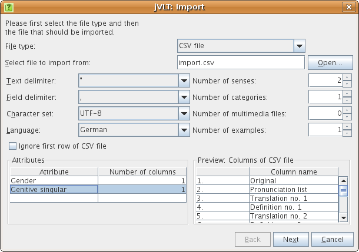
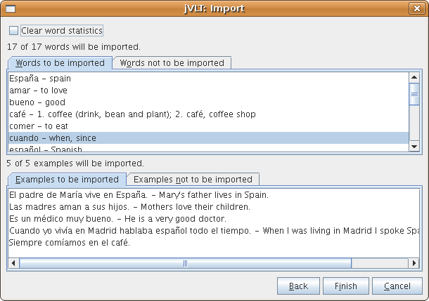
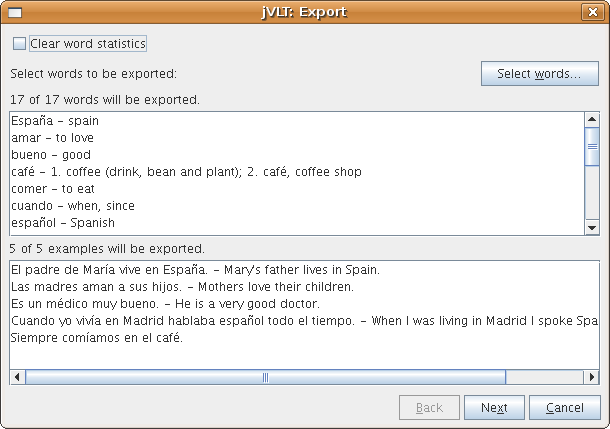
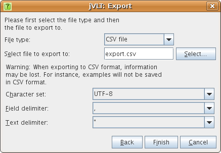

jVLT - a vocabulary learning tool
Miscellaneous
Printing
jVLT lets you print the words of your vocabulary dictionary. You can either print directly using the item "Print..." from the "File" menu or after taking a look at a preview by choosing the "Print preview" item from the same menu. If you do not want to print all the words, you can make a selection by using the filters of the word_list. Which columns are printed depends on the columns selected for the word list, just like the column widths depend on the widths of the columns of the word list. You can select the font used for printing in the preferences dialog.
Importing Dictionaries
You can import dictionaries either given in the jVLT file format or in the CSV (comma separated values) file format by selecting the "Import..." item from the "File" menu. CSV files can be created by spreadsheet programs like OpenOffice.org Calc.In the import dialog, you first select the type of the file to be imported. Afterwards, the file can be selected by pressing the button labeled "Open...". If you select "CSV file" as file type, new settings become visible which are described below.
- Text delimiter: The character delimiting the text values in the CSV file. Default is the double quote (").
- Field delimiter: The character delimiting the fields in the CSV file. Default is ",".
- Character set: The character set of the CSV file. Default is UTF-8.
- Language: If the language of your vocabulary is supported by jvlt, you can set it here. Some languages have additional attributes which can be selected in the Attributes table.
- Ignore first row: If your CSV file has a header row you should select this box.
- Number of senses: This setting determines how many columns are used for the senses. For each sense there are two columns, one for the translation and one for the definition. Each word must have at least one sense which has to either contain a translation or a definition (or both).
- Number of categories: The number of columns for the categories. A category can be an arbitrary string.
- Number of multimedia files: The number of columns for the multimedia files. A multimedia file can be either given by an absolute or by a relative path. The relative path determines the location of a multimedia file relative to the vocabulary file.
-
Number of examples:
This setting determines how many columns are used for the examples. Each example
has three columns. The first one contains the example text and the third one
the (optional) translation. The second one contains the linked sense in the
format "linked word;sense index", "linked word" or "sense index" - it also can
be empty. Per default, the original entry and the index "1" are used.
Consider the following example spreadsheet:
Original Pronunciation 1st transl. 1st def. 2nd transl. 2nd def. Example text Linked sense Example transl. warten wait maintain Das Flugzeug wird gerade gewartet. gewartet;2 gehen go Wir gehen ins Theater.
The word "warten" is inflected in the example sentence. Therefore, the inflected form "gewartet" has to be specified in the second example column. As the example uses the second sense of the word, the number "2" is entered after the semicolon in the second column. The second example is easier: For the word "gehen" only one sense was specified, and the word is not inflected in the example sentence, so the second example column can be empty. - Attributes: If a language has been set, there may be custom attributes. Attributes can be added by clicking on the cell in the first column and the last row of the table and then selecting the attribute from a drop-down list. You can remove an attribute by selecting the empty item in the drop-down list. Most attributes only have one column. If an attribute consists of a list of values, the number of columns can be adjusted.

After you press the "Next" button, the words and examples that will be imported are shown. There are also two lists displaying the words and examples that will not be imported because they are already contained in the dictionary. You can choose to remove the statistics (last quizzed, number of mistakes, etc.) of the imported data by selecting the check box at the top of the dialog. By pressing "Finish", the import actually will take place.

Exporting
You can export the currently active dictionary or a part of it into a file in jVLT, CSV (comma separated values) or HTML format via a dialog that opens after selecting the "Export..." item from the "File" menu.In the export dialog, you first select the words that should be exported by pressing the "Select words..." button. The dialog that opens thereafter is the same as the one described in the quiz section. Like when importing words, it is possible to reset the word statistics.

After you press the "Next" button, a new panel appears that lets you choose the file type and the file to export to. Note that if you choose the CSV file type, probably not all information will be saved. Press "Finish" to finish the exporting.